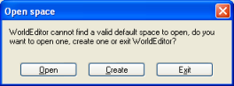
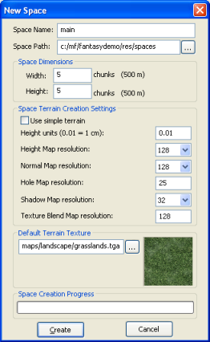
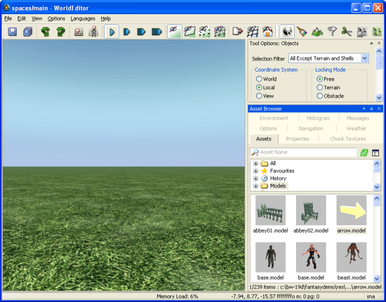

Table of Contents
This chapter describes how to get a bare-bones client up and running with its own resources and scripts. This involves:
-
Creating a new BigWorld project directory.
-
Creating files and directories necessary to define a single client-side player entity.
-
Creating a new space.
By the end of this part of the tutorial, it will be possible to walk around a trivial space in the client using a first-person view.
The FantasyDemo project is located in the fantasydemo directory in C:\BigWorld. Following that convention, we
will start our new tutorial project in the same directory, by creating a
new directory called tutorial in
C:\BigWorld. All resources and scripts specific to
this project will be located within this directory.
Please note that the tutorial project is shipped as part of your
package. A skeleton project called my_game is also shipped as part of the Indie
edition, in order to allow you to start a new project easily. Please
review the Getting Started document for more
details.
The BigWorld client is a generic executable, located at
bigworld\bin\client\bwclient.exe. Since it is independent of
the game resources it loads, it needs to be instructed as to where to find
your project's resources.
The easiest way to go about this is to use the
--res command line switch in conjunction with a batch
file to provide a convenient way to start the client for your particular
game. A benefit of doing it this way is that it also keeps the resource
path configuration self contained within your project folder. Typically,
you would create a batch file named run.bat and it would be
located at the root level of your project folder (i.e. in
my_game) and would look something like:
"..\bigworld\bin\client\bwclient.exe" --res %~dp0res;../../../bigworld/res
Keep
in mind that paths are relative to the executable location,
not the current working directory. The above example
uses %~dp0 to grab the batch file's directory as an absolute
path in order to keep the batch file generic.
Note
Remember, the %~dp0 trick will only work in a .BAT file. If you want to launch the from the command prompt directly, you will need to specifiy the full path explicitly.
Note
For details on how the client searches for resources, see the Resource search paths section in the Client Programming Guide.
Resource directories for BigWorld games are typically named
res, therefore you can simply
create a directory called res in
the tutorial directory. This top-level resources
directory will contain all game-specific scripts, assets, and
configuration files.
Entities are game objects that have a position. Not every class that you write in your game must be an entity, but most objects that are part of the game mechanics will be. Examples of entities would be the player, NPCs, chat rooms, dropped items, etc.... Examples of objects that need not be entities might be helper classes that are only attached to/used by a single entity type.
Note
For details on this and other BigWorld server terms, see the document Glossary of Terms.
Entity scripts for a BigWorld game must reside in a res/scripts directory. One of the files
that must exist in this directory is
entities.xml[3], which lists the game entities that will be used.
Create a basic
tutorial/res/scripts/entities.xml file that
contains a player entity called Avatar:
<root> <Avatar/> </root>
Example
tutorial/res/scripts/entities.xml
The other directory that must exist is res/scripts/entity_defs, which contains the
.def[4] files, with definitions of the properties and methods for
each entity.
It might be helpful to think of these definition files as being similar to C/C++ header files as they specify the types of properties and the method calls attached to the entity.
Create the
tutorial/res/scripts/entity_defs/Avatar.def file,
with the following contents:
<root>
<Volatile>
<position/>
<yaw/>
</Volatile>
<Properties>
<playerName>
<Type> UNICODE_STRING </Type>
<Flags> ALL_CLIENTS </Flags>
</playerName>
</Properties>
<ClientMethods>
</ClientMethods>
<CellMethods>
</CellMethods>
<BaseMethods>
</BaseMethods>
</root>Example
tutorial/res/scripts/entity_defs/Avatar.def
This is a very basic entity definition which defines properties for the entity, but no methods. Notice that the properties are separated into two sections: volatile and non-volatile.
For a BigWorld entity, volatile properties are positional/directional properties. They are described as volatile because they are constantly changing. The volatile properties' current value are only considered to be important thing while the history of changes on the property is less important. In a bandwidth-constrained environment only the current value should be sent.
The supported volatile properties are
position, yaw,
pitch, and roll. For simplicity,
the tutorial/res/scripts/entity_defs/Avatar.def
that we have just defined only sends position and
yaw of the Avatar
entity.
For details on volatile properties, see the Server Programming Guide's section Properties, in Properties.
In contrast to volatile properties, regular properties tend to change infrequently, and therefore all changes to a particular property should be sent down to the client. Each property can be named as you wish, and can have a number of different settings attached to it.
We have defined a simple property for storing the player's name, and for simplicity, we are only using the most necessary property settings, specifying the type STRING and distribution flags ALL_CLIENTS. The ALL_CLIENTS tags means that this property will be visible to the player controlling the client entity, as well as any other player that can see his entity. For details on this and other distribution flags, see the Server Programming Guide's section Properties, in Properties.
For details on entity properties, see the Server Programming Guide's section Properties.
The scripts that control the client-side entity logic are located
in the res/scripts/client, and
the ones that control the server-side entity logic are located in
res/scripts/cell and res/scripts/base directories.
Create each of these directories within the tutorial/res/scripts directory. Your
directory structure should now look like this:
tutorial
+-res
+-scripts
+-base
+-cell
+-client
+-entity_defsFolder structure at this stage of the tutorial
For details on the exact structure and mechanics of the scripts directory, see the Server Programming Guide's section Physical Entity Structure for Scripting.
Up to this point, we have declared the
Avatar entity in
tutorial/res/scripts/entities.xml[5] and defined it in
tutorial/scripts/entity_defs/Avatar.def[6]Now we must provide (at least part of) the script
implementation of that entity. Since we are working only on the
client-side at the moment, just create the
tutorial/res/scripts/client/Avatar.py
script:
import BigWorld
# These are constants for identifying keypresses, mouse movement etc
import Keys
class Avatar( BigWorld.Entity ):
def onEnterWorld( self, prereqs ):
pass
class PlayerAvatar( Avatar ):
def onEnterWorld( self, prereqs ):
Avatar.onEnterWorld( self, prereqs )
# Set the position/movement filter to correspond to an player avatar
self.filter = BigWorld.PlayerAvatarFilter()
# Setup the physics for the Avatar
self.physics = BigWorld.STANDARD_PHYSICS
self.physics.velocityMouse = "Direction"
self.physics.collide = True
self.physics.fall = True
def handleKeyEvent( self, event ):
# Get the current velocity
v = self.physics.velocity
# Update the velocity depending on the key input
if event.key == Keys.KEY_W:
v.z = event.isKeyDown() * 5.0
elif event.key == Keys.KEY_S:
v.z = event.isKeyDown() * -5.0
elif event.key == Keys.KEY_A:
v.x = event.isKeyDown() * -5.0
elif event.key == Keys.KEY_D:
v.x = event.isKeyDown() * 5.0
# Save back the new velocity
self.physics.velocity = vExample
tutorial/res/scripts/client/Avatar.py
Notice that the script declares two classes:
Avatar and PlayerAvatar.
These two classes are required to satisfy a hard-coded requirement in
the BigWorld client that any entity type that can act as a client proxy
must have a sub-class called
Player
that is used when attaching to the client.
<class>
We are only interested in the player at the moment, so the
implementation of the base Avatar class is left
blank. For the moment, we have just provided implementations of
callbacks for initialisation (where we set up the position filter and
player physics) and keyboard events (where we provide basic
WASD controls).
Notice that the Avatar script imports a
module called Keys. This module defines constants
for things like keyboard character codes, mouse events, joystick events,
and other commonly used constants. It is located in bigworld/res/scripts/client, so we do not
need to copy it or do anything special to access it from our
scripts.
The next required script for our basic client is the personality script. The easiest way to think of this script is as the bootstrap script for each component of a BigWorld system.
Note
For details on this and other BigWorld client terms, see the Glossary of Terms.
There should be one personality script in each script directory (i.e., for cell, base, and client) and they are used for defining callbacks to be called on startup and shutdown, as well as other global, non-entity-related functionality. On the client, this might include menu systems, user input management, camera control, etc...
For details on the client personality script, see the Client Programming Guide's section Scripting, in Personality script.
Save the basic personality script below as
tutorial/res/scripts/client/BWPersonality.py:
# This is the client personality script for the BigWorld tutorial. Think of
# it as the bootstrap script for the client. It contains functions that
# are called on initialisation, shutdown, and handlers for various input
# events.
import BigWorld
# ----------------------------------------------------------------------------
# Section: Required callbacks
# ----------------------------------------------------------------------------
# The init function is called as part of the BigWorld initialisation process.
# It receives the BigWorld xml config files as arguments. This is the best
# place to configure all the application-specific BigWorld components, like
# initial camera view, etc...
def init( scriptConfig, engineConfig, prefs ):
initOffline( scriptConfig )
# Hide the mouse cursor and restrict it to the client area of the window.
GUI.mcursor().clipped = True
GUI.mcursor().visible = False
# This is called immediately after init() finishes. We're done with all our
# init code, so this is a no-op.
def start():
pass
# This method is called just before the game shuts down.
def fini():
pass
# This is called by BigWorld when player moves from an inside to an outside
# environment, or vice versa. It should be used to adapt any personality
# related data (eg, camera position/nature, etc).
def onChangeEnvironments( inside ):
pass
# This is called by the engine when a system generated message occurs.
def addChatMsg( msg ):
print "addChatMsg:", msg
# Keyboard event handler
def handleKeyEvent( event ):
return False
# Mouse event handler
def handleMouseEvent( event ):
return False
# Joystick event handler
def handleAxisEvent( event ):
return False
# ----------------------------------------------------------------------------
# Section: Helper methods
# ----------------------------------------------------------------------------
def initOffline( scriptConfig ):
# Create a space for the client to inhabit
spaceID = BigWorld.createSpace()
# Load the space that is named in script_config.xml
BigWorld.addSpaceGeometryMapping(
spaceID, None, scriptConfig.readString( "space" ) )
# Create the player entity, using positions from script_config.xml
playerID = BigWorld.createEntity( scriptConfig.readString( "player/entityType" ),
spaceID, 0,
scriptConfig.readVector3( "player/startPosition" ),
scriptConfig.readVector3( "player/startDirection" ),
{} )
BigWorld.player( BigWorld.entities[ playerID ] )
# Use first person mode since we are not using models yet.
BigWorld.camera().firstPerson = TrueExample tutorial/res/scripts/client/BWPersonality.py
This personality script provides an
initOffline method that contains enough code to
get a basic client going, as well as stub implementations of all other
required callbacks. The initialisation code expects various configuration
files to be passed to it, and expects
scriptConfig to contain particular settings, such
as space, player/entityType, and so
on.
The following sections describe how to set up those files, so they will be ready to be passed to the personality script on startup.
At a minimum, the BigWorld client expects three XML configuration files to be passed into the personality script at startup:
-
<engine_config>.xml -
<scripts_config>.xml -
<preferences>.xml
Note
For details on these files, see the Client Programming Guide's section Scripting, in Personality script, sub-sections File
<engine_config>.xml, File
<scripts_config>.xml, and File
<preferences>.xml respectively.
The
<engine_config>.xmlfantasydemo/res/engine_config.xml to
tutorial/res/engine_config.xml, ensuring that we change the
<personality> setting to BWPersonality.
Notice that this corresponds to the file
BWPersonality.py that we created in The personality script).
The
<scripts_config>.xmltutorial/res/scripts_config.xml:
<scripts_config.xml>
<!-- The contents of this file are passed to the personality script
as the first argument in the init function (as a data section). Its
grammar is solely defined by the personality script. -->
<space> spaces/main </space>
<player>
<entityType> Avatar </entityType>
<!-- This is the entity type of the player that will be created. You must implement
a Player<class> type (e.g. PlayerAvatar) to use this type as a client proxy. The following options -->
<startPosition> 0.0 1.25 0.0 </startPosition>
<startDirection> 1.0 0.0 0.0 </startDirection>
<!-- are used by the personality script to provide a start position and
facing dir for players if there is no space specific spawn point. -->
</player>
</scripts_config.xml>Example tutorial/res/scripts_config.xml
At this stage, the values for the configuration settings expected by
the personality script's init method have been provided. The
only thing still missing for our basic client is the actual space data.
The script configuration passes the string spaces/main
into the personality script as the space in which the client entity will
be created, so next we will create a basic space to walk around in.
Before starting World Editor, you will need to tell it where to find
the resources for your particular project. To do this, open
bigworld/tools/worldeditor/paths.xml and replace the
reference to FantasyDemo to your own project. For example,
<root>
<Paths>
<Path>../../../tutorial/res</Path>
<Path>../../../bigworld/res</Path>
</Paths>
</root>Example bigworld/worldeditor/paths.xml
To create a simple space that can be navigated, follow the steps below:
-
Start WorldEditor (
bigworld/tools/worldeditor/worldeditor.exe). -
In the Open Space dialog box , click the Create button.
Open Space dialog box
-
In the New Space dialog box:
-
Set the Space Name field to main.
-
Set the Space Dimensions group box's Width and Height fields to 5.
-
Set the Default Terrain Texture field to a texture of your choosing.
-
Click the Create button.
New Space dialog box
Note
For details on this dialog box, see the Content Tools Reference Guide's section Dialog boxes, in New Space dialog box.
-
-
The new space main will be created and displayed in WorldEditor, as displayed below.
The main space
-
Select the File → Save menu item to save the new space
-
Select the File → Exit menu item to close WorldEditor.
Having carried out the steps in the previous sections of this
tutorial, you can now run the client . To do that, use the
run.bat you created earlier. You should have a basic
first-person player that can walk around a space using mouse-look and
WASD controls.
A simple first-person client
[3] For details on this file, see the Server Programming Guide's section Physical Entity Structure for Scripting in The entities.xml File.
[4] For details on these files, see the Server Programming Guide's section Physical Entity Structure for Scripting, in The Entity Definition File.
[5] See entities.xml.
[6] See Defining the Avatar entity type.